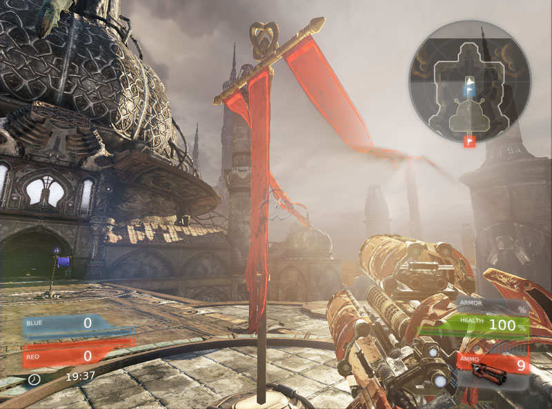

UDN
Search public documentation:
PhysXClothReference
日本語訳
中国翻译
한국어
Interested in the Unreal Engine?
Visit the Unreal Technology site.
Looking for jobs and company info?
Check out the Epic games site.
Questions about support via UDN?
Contact the UDN Staff
中国翻译
한국어
Interested in the Unreal Engine?
Visit the Unreal Technology site.
Looking for jobs and company info?
Check out the Epic games site.
Questions about support via UDN?
Contact the UDN Staff
Cloth Reference
Overview
Cloth simulation in Unreal Engine 3 is handled by PhysX's cloth simulation engine. With this technique you are able to create interactive decorations such as curtains and flags. Because cloth may receive collision events, they can be affected by players, their weapons and other movement based events. This screen shot shows a flag which flutters about in the wind.
How to create PhysX cloth
PhysX simulates the cloth by using pre tessellated skeletal meshes, that have their cloth vertices weighted to bones. If you wish to attach the cloth to a part of the mesh, set some of the edge cloth vertices to another bone.
Setting up bones in the skeletal mesh
In this screen shot, because the flag is to be attached to the horizontal steel pole, the top row of vertices have been weighted to another bone. The rest of the flag vertices have been weighted to the flag bone.Setting up bones for multiple cloths simulations
In this screen shot, because there are three flags attached to the horizontal steel pole, there are six bones that control the cloth simulation. For each flag, one bone is weighted to the top row of the flag mesh and the second bone is weighted to the rest of the flag mesh. This ensures attachment of the flags to the horizontal steel pole. In game, you are able to simulate as many individual cloth pieces as you want, as long as you define bones for them. Setting up the skeletal mesh to simulate cloth
By default, cloth is turned off because most skeletal meshes don't require cloth simulation. Thus, you must turn it on. PhysX cloth is simulated on the CPU, thus CPU skinning must first be turned on. You toggle this by altering the property within the Skeletal Mesh tab within the AnimSet Editor. After enabling CPU skinning, you then need to define the bones that have the cloth vertices weighted to them. Scroll down within the Skeletal Mesh tab, and expand the Cloth section. Add items into the Cloth Bones array and type in the name of the bones, exactly the same as they appear in the Skeleton Tree panel. That's the bare minimum that you need to do to set up cloth simulation. You can now click to start simulating the cloth. As you change the variables within the Cloth section and or the Advanced Cloth section you will be able to see the changes straight away. If you hold down W, you can adjust the Wind being used in the preview. Holding W and the left mouse button allows you to adjust the direction of wind. Holding W and the right mouse button allows you to adjust the strength of the wind (only moving the mouse up or down will produce a result).Collisions and PhysX cloth
Cloth only collides with rigid bodies, such as skeletal meshes with physics assets and static meshes that have rigid bodies. This is not normally enabled by default, but it's very easy to turn it on. For the flag mesh, the flags needed to be able to collide with the flag poles. Thus, physics assets were created for the skeletal meshes. Reasonable care was taken in the creation of the rigid bodies, as accurate simulation of the cloth was desired. Ensure that the rigid bodies are contributing to the collision, which you can test by simulating the physics asset. From there, you can place your cloth enabled skeletal mesh into the world. There are a few properties that you have to set in order to get cloth collisions working. First, set the skeletal mesh Physics Asset and check Has Physics Asset Instance.
 Next you will need to adjust the Cloth parameters. Expand the Cloth section. Check Enable Cloth Simulation, Cloth Awake On Startup and set Cloth Wind to create an ambient force that will ripple the wave.
Lastly, expend the Collision section. Check Block Rigid Body. Any actor that you need to interact with cloth must block rigid bodies. PhysX uses collision channels to filter what can and what cannot interact with various other physics simulations. This would allow you to create some physics actors which interact with cloth and some that don't. Since the flag mesh needs to collide with the cloth, the Cloth channel must be set within RBCollide With Channels.
Cloth won't simulate inside the Editor world viewport, even with Real Time turned on. However, if you enter PIE the cloth will now simulate and also collide with itself. To set up other actors that need to collide with cloth, set their Collision properties as above. Remember, for skeletal meshes, physics assets are used for collision so remember to assign them.
Next you will need to adjust the Cloth parameters. Expand the Cloth section. Check Enable Cloth Simulation, Cloth Awake On Startup and set Cloth Wind to create an ambient force that will ripple the wave.
Lastly, expend the Collision section. Check Block Rigid Body. Any actor that you need to interact with cloth must block rigid bodies. PhysX uses collision channels to filter what can and what cannot interact with various other physics simulations. This would allow you to create some physics actors which interact with cloth and some that don't. Since the flag mesh needs to collide with the cloth, the Cloth channel must be set within RBCollide With Channels.
Cloth won't simulate inside the Editor world viewport, even with Real Time turned on. However, if you enter PIE the cloth will now simulate and also collide with itself. To set up other actors that need to collide with cloth, set their Collision properties as above. Remember, for skeletal meshes, physics assets are used for collision so remember to assign them.
Enabling cloth using Unrealscript
Sometimes you may want an skeletal mesh component to initially not simulate cloth. Such as when cloth is on a table, or is in a location where it would be wasteful to simulate it. You can use the following code snippet to enable cloth on skeletal mesh components.// Turn on and off cloth simulation SkeletalMeshComponent.SetEnableClothSimulation(true);
Using PhysX cloth within Unrealscript
A large proportion of the PhysX cloth API is exposed to Unrealscript, which you can tweak at run time to produce interesting results. All of these functions are found within SkeletalMeshComponent.uc and can be used on skeletal mesh components.Simulation functions
- SetEnableClothSimulation(bool bInEnable) - Turn on and off cloth simulation for this skeletal mesh.
- SetClothFrozen(bool bNewFrozen) - Toggle active simulation of cloth. Cheaper than doing SetEnableClothSimulation, and keeps its shape while frozen.
- SetEnableClothingSimulation(bool bInEnable) - Toggle active simulation of clothing and keeps its shape while frozen.
- UpdateClothParams() - Update parameters of the internal cloth simulation from the SkeletalMesh properties.
- SetClothExternalForce(vector InForce) - Modify the external force that is applied to the cloth. Will continue to be applied until it is changed.
- SetAttachClothVertsToBaseBody(bool bAttachVerts) - Attach/detach vertices from physics body that this components actor is attached to.
- ResetClothVertsToRefPose() - Move all vertices in the cloth's to the reference pose and zero their velocity.
Get functions
- GetClothAttachmentResponseCoefficient() - Returns the cloth's attachment response coefficient.
- GetClothAttachmentTearFactor() - Returns the cloth's attachment tear factor.
- GetClothBendingStiffness() - Returns the cloth's bending stiffness.
- GetClothCollisionResponseCoefficient() - Returns the cloth's collision response coefficient.
- GetClothDampingCoefficient() - Returns the cloth's damping coefficient.
- GetClothFlags() - Returns the bit mask that represent flags for the cloth.
- GetClothFriction() - Returns the cloth's friction.
- GetClothPressure() - Returns the cloth's pressure.
- GetClothSleepLinearVelocity() - Returns the cloth's sleep linear velocity.
- GetClothSolverIterations() - Returns the cloth's solver iteration count.
- GetClothStretchingStiffness() - Returns the cloth's stretching stiffness.
- GetClothTearFactor() - Returns the cloth's tear factor.
- GetClothThickness() - Returns the cloth's thickness.
Set functions
- SetClothAttachmentResponseCoefficient(float ClothAttachmentResponseCoefficient) - Sets the cloth's attachment response coefficient.
- SetClothAttachmentTearFactor(float ClothAttachTearFactor) - Sets the cloth's attachment tear factor.
- SetClothBendingStiffness(float ClothBendingStiffness) - Sets the cloth's bending stiffness.
- SetClothCollisionResponseCoefficient(float ClothCollisionResponseCoefficient) - Sets the cloth's collision response coefficient.
- SetClothDampingCoefficient(float ClothDampingCoefficient) - Sets the cloth's damping coefficient.
- SetClothFlags(int ClothFlags) - Sets the cloth's flag bit mask.
- SetClothFriction(float ClothFriction) - Sets the cloth's friction.
- SetClothPressure(float ClothPressure) - Sets the cloth's pressure.
- SetClothSleepLinearVelocity(float ClothSleepLinearVelocity) - Sets the cloth's sleep linear velocity.
- SetClothSolverIterations(int ClothSolverIterations) - Sets how many iterations the cloth's solver will use.
- SetClothStretchingStiffness(float ClothStretchingStiffness) - Sets the cloth's stretching stiffness.
- SetClothTearFactor(float ClothTearFactor) - Sets the cloth's tear factor.
- SetClothThickness(float ClothThickness) - Sets the cloth's thickness.
- SetClothSleep(bool IfClothSleep) - Sets the cloth sleep status.
- SetClothPosition(vector ClothOffSet) - Sets the cloth's position.
- SetClothVelocity(vector VelocityOffSet) - Sets the cloth's velocity.
Attachment functions
- AttachClothToCollidingShapes(bool AttatchTwoWay, bool AttachTearable) - Attachs the cloth to the currently colliding shapes.
Valid Bounds functions
- EnableClothValidBounds(bool IfEnableClothValidBounds) - Enables valid bounds calculations for the cloth.
- SetClothValidBounds(vector ClothValidBoundsMin, vector ClothValidBoundsMax) - Sets the valid bounds used for the cloth.
Tearing apart PhysX cloth
It is possible to tear cloth simulated meshes in Unreal Engine 3. This is simply done by checking the Enable Cloth Tearing and setting the Cloth Tear Factor. Cloth Tear Factor allows you to tweak how strong of a force must be applied to the cloth before it tears. Ideally you would want this to greater than one otherwise almost any force applied to it would tear the cloth. For complex meshes, it may be necessary to increase the Cloth Tear Reserve to produce the correct results. Forces should be applied using the NxForceField classes.
Debugging PhysX cloth
You can toggle debug rendering information via the AnimSet Editor PhysX Debug menu. Leaving these options check, will also show the debug in game as well.
Other PhysX cloth properties
- Use Cloth COM Damping - This can help keep stretching down on damped cloth. Normally, damping slows things down relative to the world frame. But if part of the cloth is attached (think of a flag attached to a pole), and the attachment is moving fast, then the damping on the free vertices can cause them to stretch away from the pole. With COM Damping on, the cloth is slowed down in a "local frame," reducing this effect.
- Cloth Relative Grid Spacing - This is an optimization parameter. It defines how the cloth is represented internally for first-pass collision detection. (Broadphase culling.) If this number is very small, then there is a large broad phase overhead but the number of detailed collision calculations is reduced. Too big, and the load switches from the coarse to the fine-grained calculation. Usually there is an optimal range for this parameter, and we have it set to 0.25 by default.
- Enable Cloth Two Way Collision - Normally, rigid bodies will affect cloth but not the other way around. That is, you can drop cloth on an object, and it will drape over the object. But if you pull the cloth, the object won't feel any force. With
bEnableClothTwoWayCollisionset, the object will feel a force. - Cloth Special Bones - These define skeletal mesh bones for cloth attachments. This is a special form of attachment which can be broken if one of the bones' BoneType is set to CLOTHBONE_BreakableAttachment. This allows the cloth to be torn off of the bone if it's pulled hard enough.
- Enable Cloth Line Checks - If you wish to be able to shoot cloth then this needs to be enabled.
- Cloth Metal Penetration Depth - This used with metal cloth, and when positive gives a greater deformation when the metal cloth is hit by a rigid body.
- Cloth Tear Reserve - This is used with cloth tearing. When cloth is torn, extra vertices are created. This says how many extra vertices can be created. Once this number of vertices is created by tearing, you can't tear the cloth any more.
Downloads
- Download the content. (PhysXClothExample.zip)